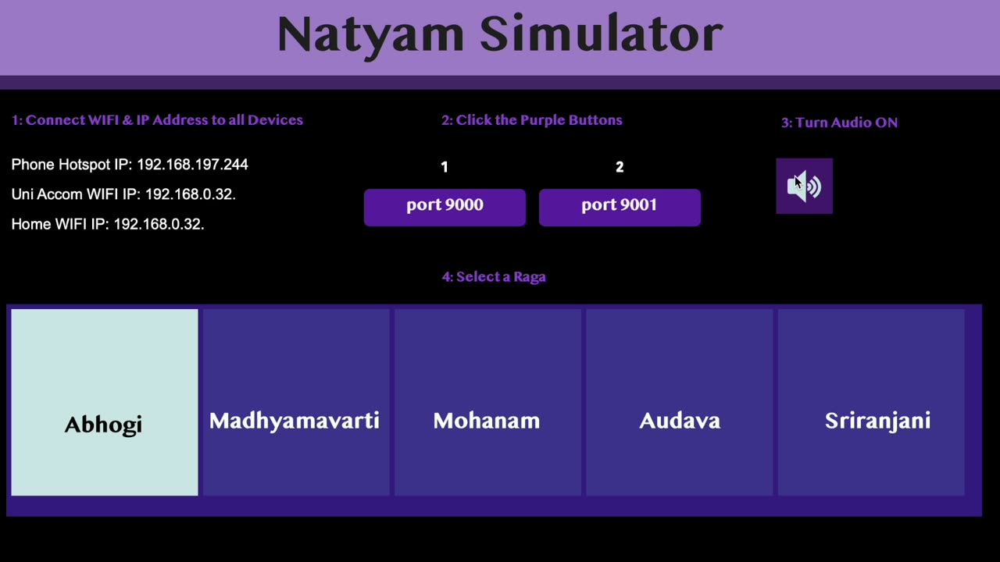
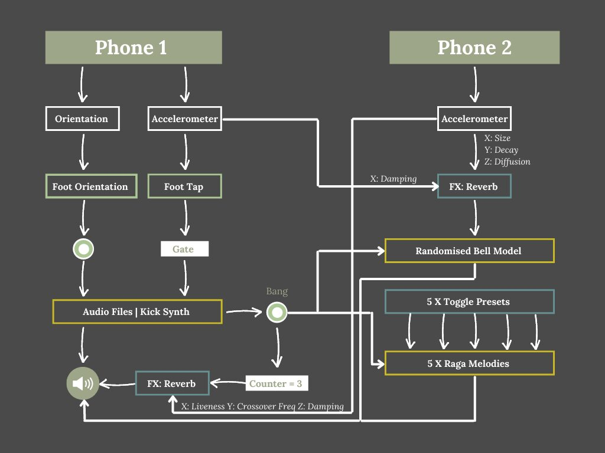
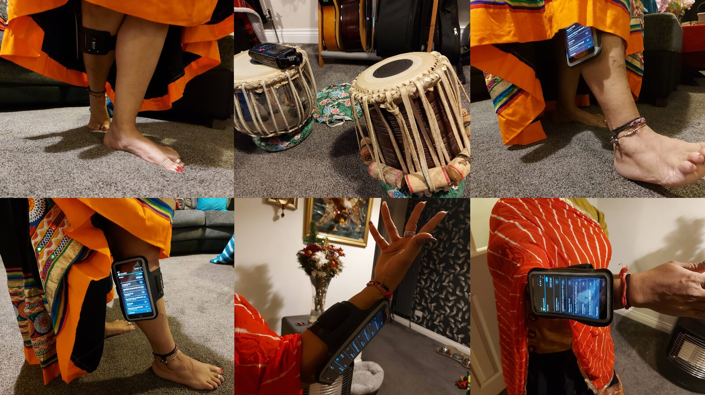

Natyam Simulator
(https://nime.pubpub.org/pub/natyamsimulator/draft?access=sgiykkk1)
Abstract:
Attempting to reinvent the relationship between dance and music, the Natyam Simulator explores an innovative way to bring traditional ancient dance conventions to the modern world of technology. Inspired by ancient Indian dance style, Bharatanatyam, the Natyam Simulator embodies a creative solution for Carnatic music to be delivered from a dancer’s lens. The word Bha-ra-ta-natyam stands for, Expression, Melody, Rhythm, and Dance and is one of the oldest classical dance styles in India. It is performed by an ensemble of Carnatic musicians and illustrated by one or many dancers. Through precise footwork and meaningful hand gestures, dancers perform to narrate spiritual tales of Hinduism. Attempting to reinvent traditions, this project was driven by the meaning of Bharatanatyam through an alternate perspective. Praising the advancements of current wearable musical instruments, the Natyam Simulator attempts to reimagine the art of dance, allowing the dancer to control their story, visually and audibly. The system simulates the following: A Tabla Model, in which percussive instruments are played following the dancers’ footsteps. A moving Ghungroo Bell Model, a native Indian bell expressed through varied samples and reverb parameters. Finally, a Raga Melody Selector, where common Carnatic vocal scales are continuously spoken when the dancer steps.
Requirements:
A video call to discuss the product details and access to the Natyam Simulator website to view product specification and supporting media.
Program Description:
The author will briefly discuss their heritage and inspirations that led to the integration of traditional culture with modern-day technology. Highlighting pioneers such as Imogen Heap (MiMU, 2022) and Laetitia Sonami (Lady Gloves, 2021), the demo will explore how current accomplishments have influenced the functionality of the Natyam Simulator. This will be coupled with a detailed description of the system’s specification, exploring how a body-focused approach to technology, utilised two android phones, to generate unique, expressive and personal music. Encouraging audience final thoughts, the demo will conclude with an explanation of how this project compliments Bharatanatyam dancers, and how moving forward, this opens possibilities for further imaginative interpretations.
Media:

▶Demo Video for the Natyam Simulator - Images are not of the author.


Visual Illustration of the Natyam Simulator Functionality


Visual Demonstration of the Product Technology - Images are not of the author.
Acknowledgments:
The author would like to thank their university educator, for their guidance, encouragement, and respect throughout all stages of this project. Their careful critique and enthusiasm for other cultures helped shape the scope of this project, maintaining the essence of Bharatanatyam whilst challenging all boundaries.